Sweet Spot
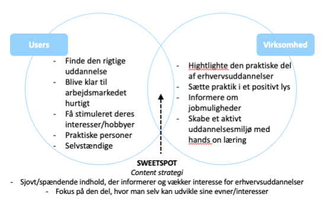Tone of Voice
Med udgangspunkt i vores SoMe strategy og Tone of voice guide, har vi lagt vægt på at vores Tone of Voice skal kunne passe til Aarhus Erhvervsakademis værdier, men samtidig også kunne fange målgruppen og de forskellige stemninger der er i vores indhold.
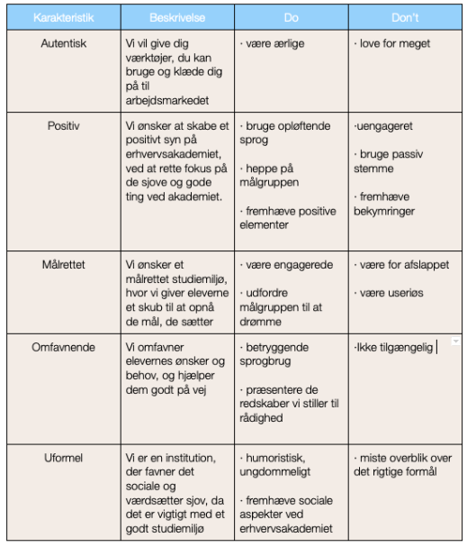SoMe Strategi
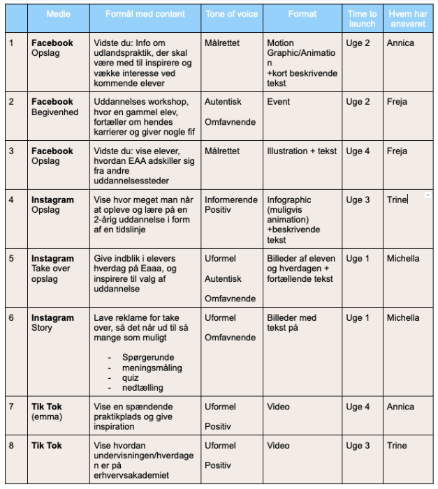Content Kalender
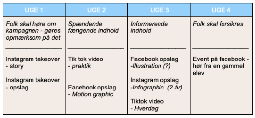Design Guide
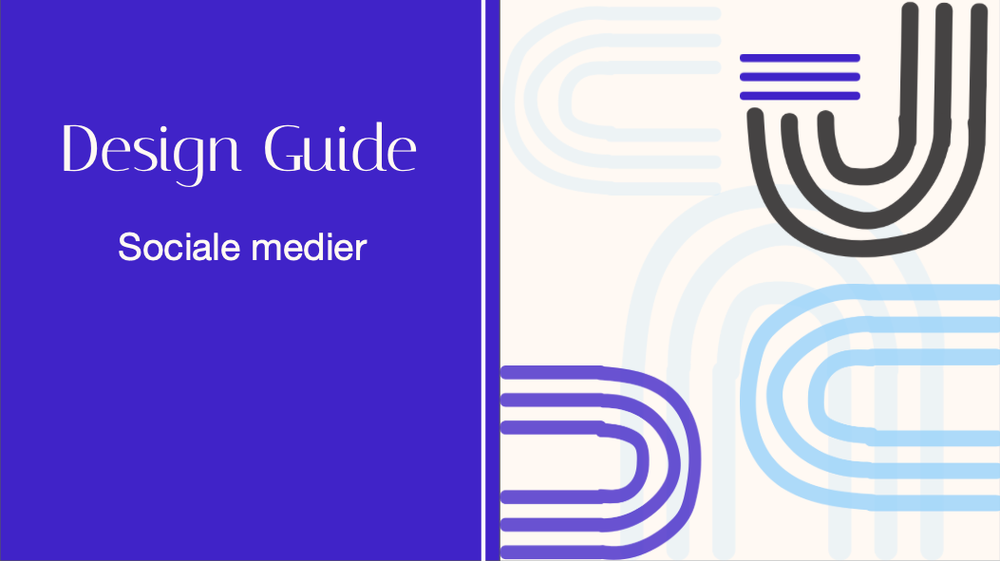SEO
Vi har arbejdet med SEO i form af keywords og hashtags. Vi har integreret keywords var vores arbejde med købstragten på alle platforme (Instagram, Tiktok og Facebook). Derudover har vi brugt hashtags på Instagram og Tik Tok, da de er mest relevante på disse to platforme.
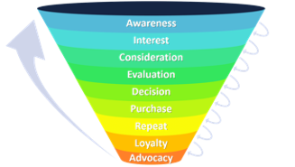 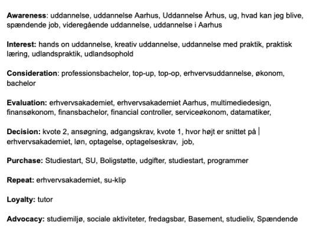Content
Vi har arbejdet med brugergenereret indhold (UGC) i form af en "takeover" på Instagram.
Det betyder at udvalgte elever eller andre relevante får lov, at lave deres eget indhold
(efter retningslinjer) på Erhvervsakademiets Instagram. Dette har vi valgt at lave, for at give
en øget troværdighed til EAAA, og gøre det nemmere for elever, at få en ide om hvordan studielivet er.
Desuden har vi også valgt at lave en spørgerunde i forbindelse med vores takeover på Instagram - på den måde er brugerne med
til at skabe content på Instagram, da de kan stille spørgsmål og få svar på dem.
Uge 2
Facebook opslag med en motion graphic. Tone of voice: målrettet.
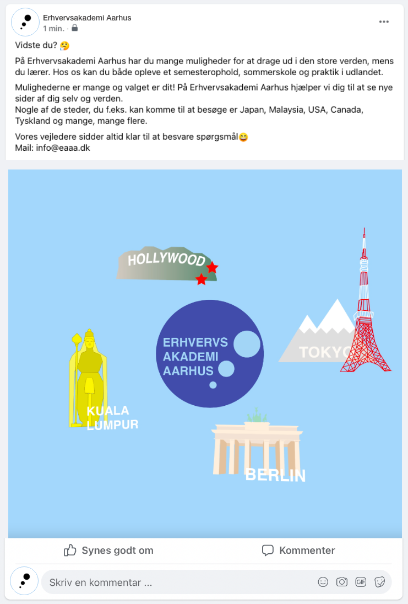Uge 2
Facebook event til mobil og web. Tone of voice: autentisk/omfavnende.
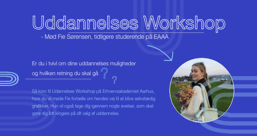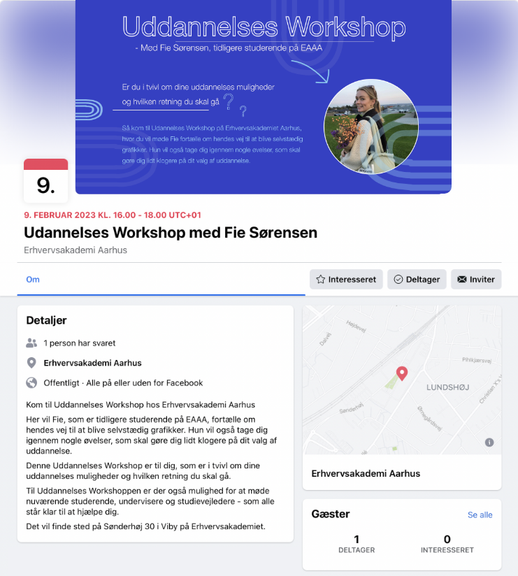
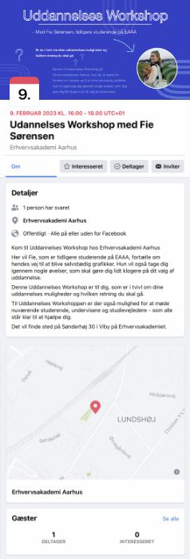
Uge 4
Facebook opslag med illustration til mobil og web.. Tone of voice: målrettet
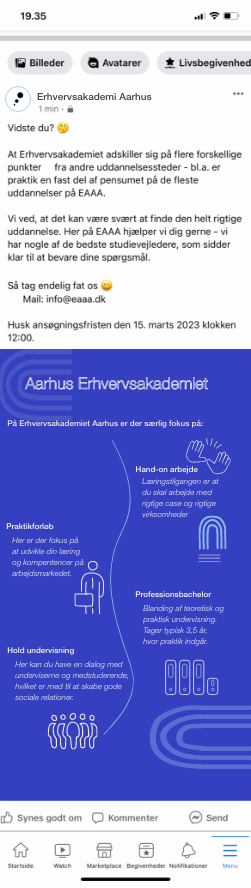 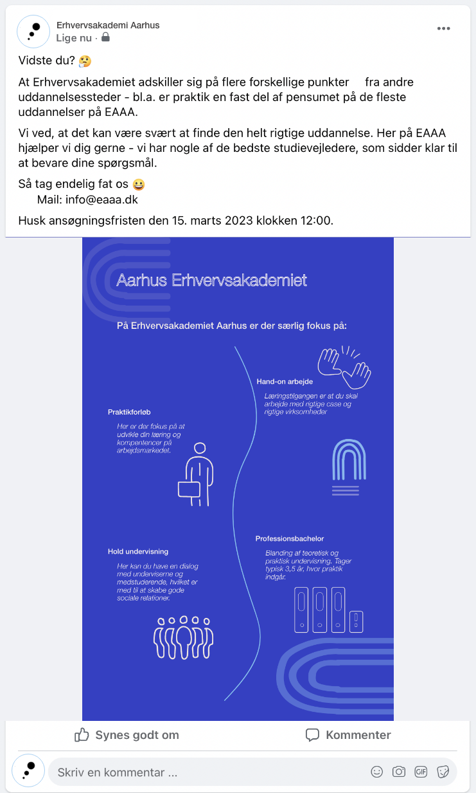Uge 1
Instagram takeover - Stories
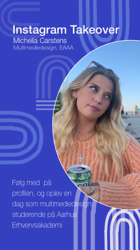 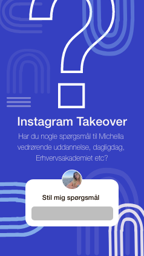
Uge 1
Instagram takeover - Opslag
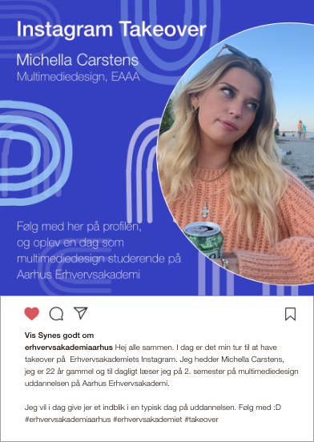 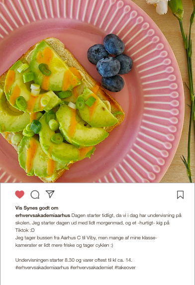 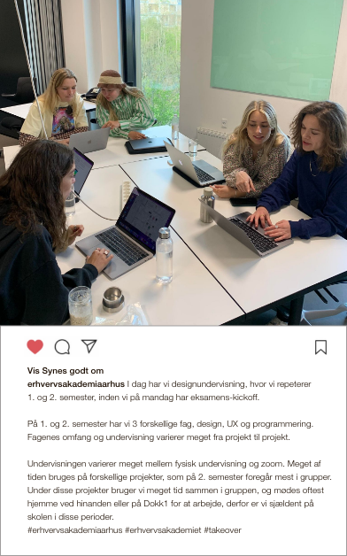 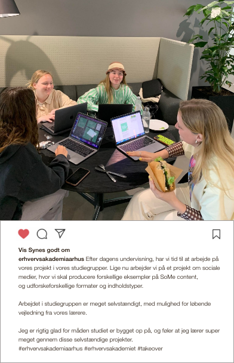 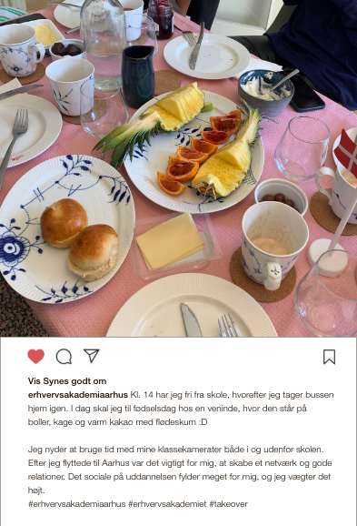
Uge 3
Instagram infographic - Opslag
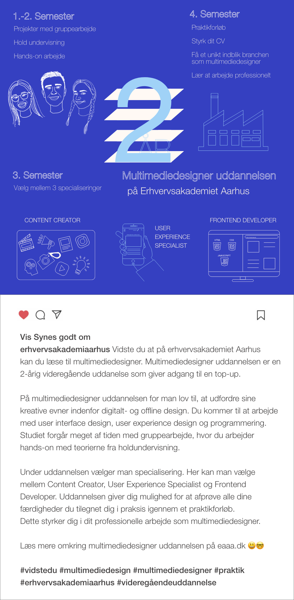
Tik Tok
Uge 3
Tik tok der viser en dag som studerende på EAAA. Tone of voice: uformel/positiv
Uge 4
Tik tok der viser en dag i praktik. Tone of voice: uformel/positiv